DLR-D-Flow: RK4 Noise Test and Per-Iteration Cost
Report of 9 September 2026. Part 1 extends the RK4-versus-Euler noise study to 200×200 and 250×250 at 1% noise. Part 2 states the DLR-D-Flow algorithm in pseudocode and reports the per-iteration cost against exact-gradient D-Flow across six resolutions under one fixed configuration.
1. Noise Test at 200×200 and 250×250: RK4 versus Forward Euler
Goal. Last week the two integrators were compared at 128 and 160 with matched step counts and no clear advantage for RK4. This week the study is extended to the two largest grids, 200×200 and 250×250, at 1% measurement noise. RK4 uses four velocity evaluations per step against Euler's one, so at matched step count it costs about four times as much; the question remains whether the reduced time-discretization error buys a corresponding gain in reconstruction quality.
1.1 Experimental Setup
| Setting | Value |
|---|---|
| Forward operator | Parallel-beam Radon, 15 angles over \([0,\pi)\) |
| Resolutions | 200×200, 250×250 |
| Noise level \(\delta\) | 1% relative \(L_2\), added to the sinogram |
| Integrators | Forward Euler and RK4, both 100 time steps |
| Velocity evaluations per solve | 100 (Euler), 400 (RK4) |
| Optimizer | LBFGS on the source point \(z\), lr 1.0, no line search |
| LBFGS max_iter / history | 1 / 100 |
| Source prior | \(\lambda\|z\|_2^2\) with \(\lambda=10^{-3}\) |
| Outer iterations | 150 (fixed budget; the 2% target was reached once) |
| Selection rule | Best measurement-objective iterate |
| Samples per cell | 5 (matched across integrators: same image, same noise, same \(z_0\)) |
| Error metric | Image relative \(L_2\), \(\|\hat{x}-x_\star\|_2/\|x_\star\|_2\) |
| Total reconstructions | 20 |
1.2 Numerical Results
Table 1. Image relative \(L_2\) error as a percentage, with cost. Best, median and worst are over the five matched samples in each cell; spread is the sample standard deviation. The lower median of each pair is shown in bold.
| Resolution | Forward Euler | RK4 | ||||||
|---|---|---|---|---|---|---|---|---|
| Best (%) | Median (%) | Worst (%) | s / iter | Best (%) | Median (%) | Worst (%) | s / iter | |
| 200×200 | 10.63 | 18.11 | 40.92 | 3.08 | 6.54 | 10.86 | 17.55 | 12.51 |
| 250×250 | 8.67 | 14.75 | 27.21 | 6.00 | 12.91 | 14.02 | 23.65 | 24.23 |
Table 2. Per-sample image relative \(L_2\) error (%). Each row is one matched pair; the winner of the pair is shown in bold.
| Resolution | Sample | Forward Euler | RK4 | Winner |
|---|---|---|---|---|
| 200×200 | 0 | 19.06 | 17.55 | RK4 |
| 200×200 | 1 | 10.63 | 10.86 | Euler |
| 200×200 | 2 | 14.50 | 7.83 | RK4 |
| 200×200 | 3 | 18.11 | 6.54 | RK4 |
| 200×200 | 4 | 40.92 | 12.96 | RK4 |
| 250×250 | 0 | 8.67 | 18.71 | Euler |
| 250×250 | 1 | 14.67 | 14.02 | RK4 |
| 250×250 | 2 | 18.41 | 12.91 | RK4 |
| 250×250 | 3 | 14.75 | 23.65 | Euler |
| 250×250 | 4 | 27.21 | 13.65 | RK4 |
1.3 Reconstructions
Best, median and worst of the five samples in each cell, ranked by image relative \(L_2\), with forward Euler on the top row and RK4 below it. Each panel is the standard diagnostic layout: ground truth, reconstruction and absolute image error on the top row; observed noisy \(Ax\), reconstructed \(Ax\) and absolute measurement residual on the bottom. Error panels use a fixed \([0,1]\) scale so panels are comparable across cells.
1% noise, 200×200
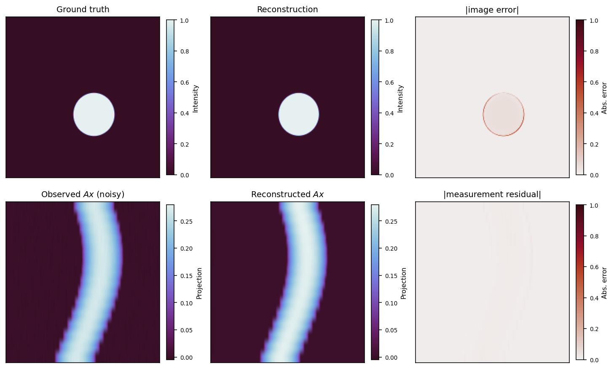
image rel. \(L_2\) = 10.63%
measurement rel. \(L_2\) = 4.19%
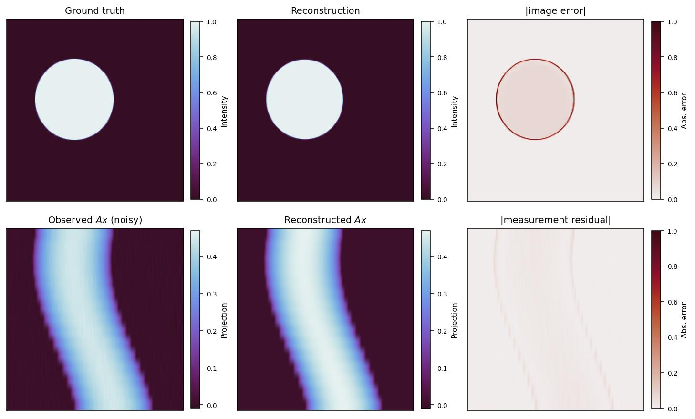
image rel. \(L_2\) = 18.11%
measurement rel. \(L_2\) = 5.38%
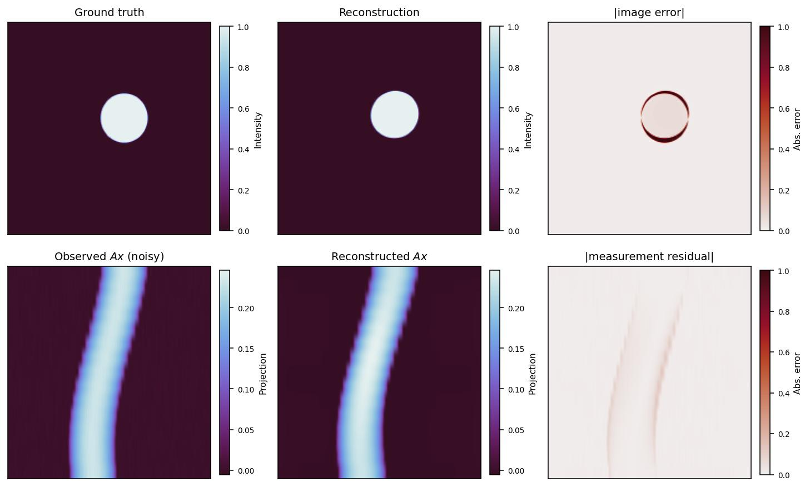
image rel. \(L_2\) = 40.92%
measurement rel. \(L_2\) = 17.88%
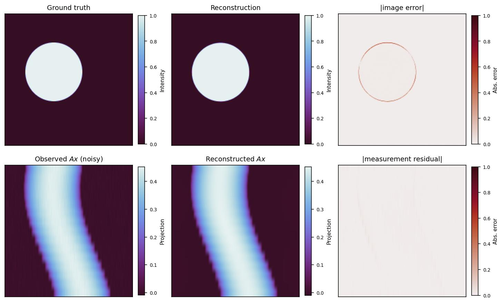
image rel. \(L_2\) = 6.54%
measurement rel. \(L_2\) = 1.96%
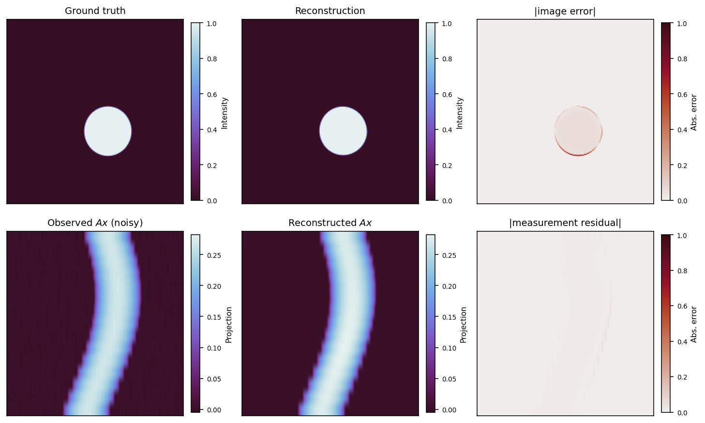
image rel. \(L_2\) = 10.86%
measurement rel. \(L_2\) = 4.44%
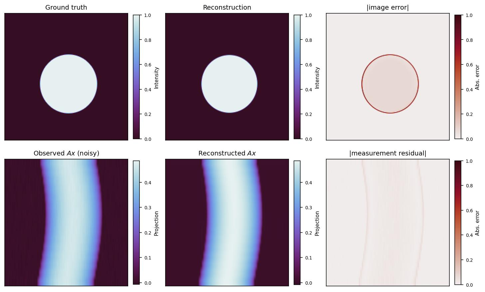
image rel. \(L_2\) = 17.55%
measurement rel. \(L_2\) = 5.26%
1% noise, 250×250
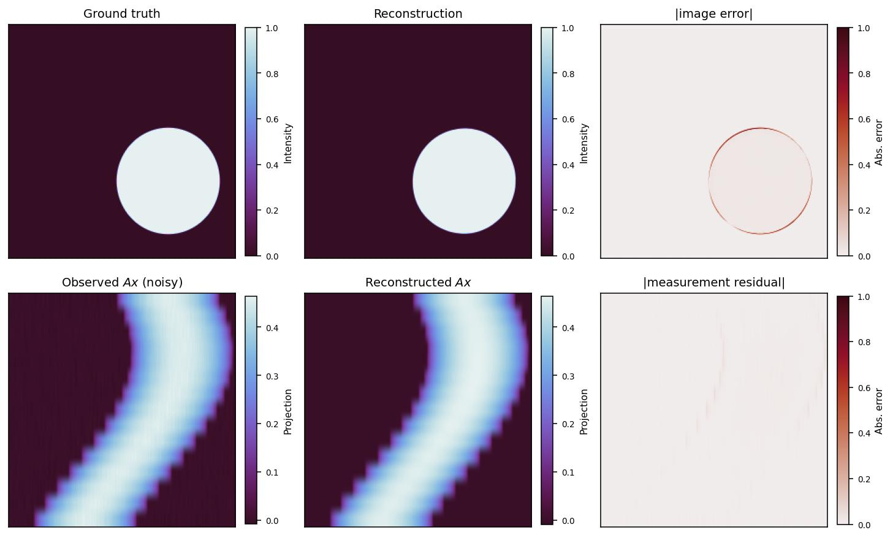
image rel. \(L_2\) = 8.67%
measurement rel. \(L_2\) = 2.18%
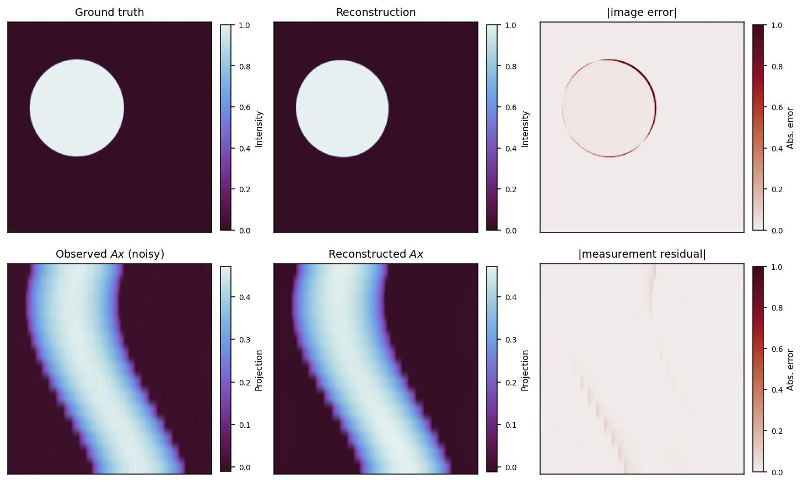
image rel. \(L_2\) = 14.75%
measurement rel. \(L_2\) = 4.36%
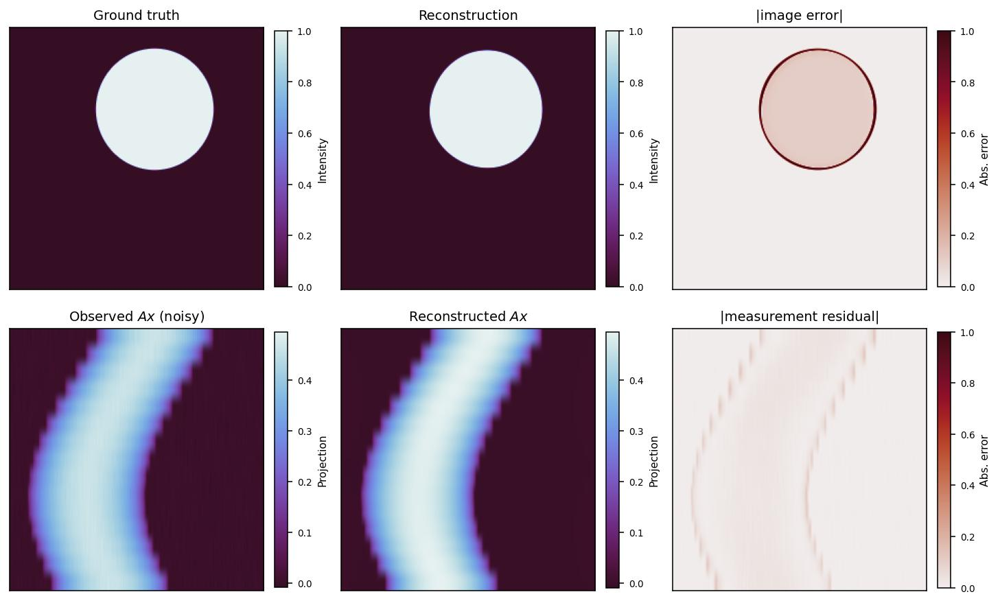
image rel. \(L_2\) = 27.21%
measurement rel. \(L_2\) = 8.07%
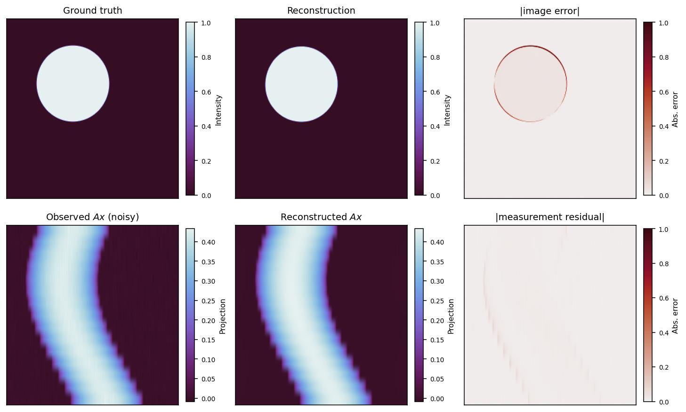
image rel. \(L_2\) = 12.91%
measurement rel. \(L_2\) = 3.50%
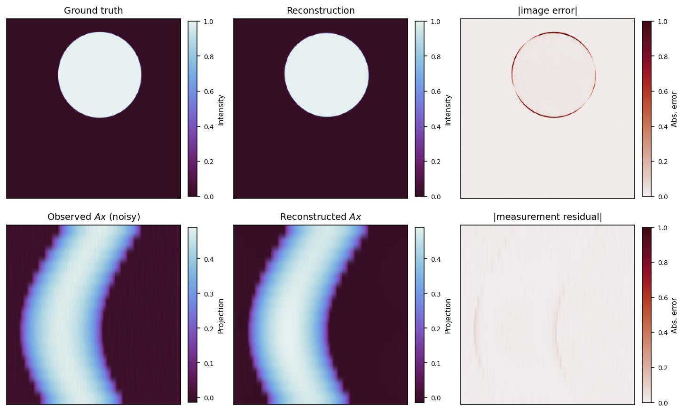
image rel. \(L_2\) = 14.02%
measurement rel. \(L_2\) = 4.06%
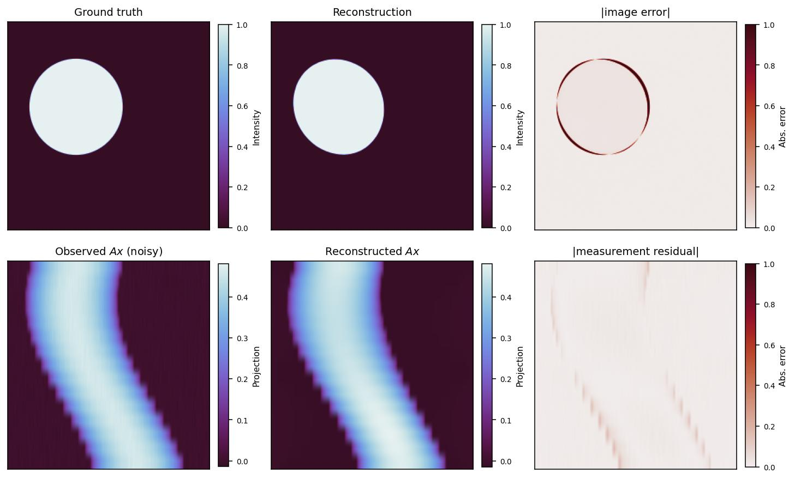
image rel. \(L_2\) = 23.65%
measurement rel. \(L_2\) = 7.48%
2. From D-Flow to DLR-D-Flow
The two methods solve the same optimization problem with the same outer loop. They differ in exactly one step. This section states D-Flow first, then that one step, then the machinery behind it, and finally the numerical comparison.
2.1 D-Flow
A pretrained flow-matching model transports a source point into an image along
discretized here as \(N=100\) forward-Euler steps of size \(h=1/N\). Given noisy, incomplete data \(y_\delta=\mathcal{A}(x_\star)+\eta\), D-Flow does not optimize the image. It optimizes the source point, so that every candidate is by construction something the flow can generate — that is what enforces the prior:
The chain rule splits the gradient of \(\Phi\) into a cheap piece and an expensive one:
- \(g_x\in\mathbb{R}^{d}\) is the terminal gradient: the derivative of \(\Phi\) with respect to the generated image, holding the flow fixed.
- \(J_t=\partial x_t/\partial z\in\mathbb{R}^{d\times d}\) is the flow sensitivity: how a perturbation of the source point changes the state at time \(t\). Applying \(J_1^{\top}\) to \(g_x\) pulls the image-space gradient back through the entire flow into source space.
D-Flow performs that pullback exactly, by reverse-mode differentiation through the ODE solver: the forward pass records every intermediate activation of all \(N\) steps, and the backward pass sweeps through them. This is the classical adjoint computation, and it never forms \(J_1\).
Output: the iterate with the smallest measurement misfit
- outer for \(k=1,\dots,K\):
- Generate. Run the flow \(x_1=\operatorname{flow}(z)\), recording the activation tape for all \(N\) steps. \(N\) network evaluations
- Terminal gradient. \(g_x=D\mathcal{A}(x_1)^{*}\big(\mathcal{A}(x_1)-y_\delta\big)\).
- Exact pullback. \(\nabla_z\Phi=J_1^{\top}g_x+2\lambda z\) by reverse-mode differentiation over the tape. about \(2N\) further network evaluations
- Step. \(z\leftarrow\operatorname{LBFGS}(z,\nabla_z\Phi)\); keep \(x_1\) if its misfit is the smallest seen.
2.2 DLR-D-Flow: approximating the sensitivity
DLR-D-Flow keeps Algorithm 1 intact and replaces step (c). Instead of differentiating back through the solver, it carries a cheap surrogate for the sensitivity forward alongside the state, so that at \(t=1\) an approximate pullback is available immediately. The surrogate is a scalar multiple of the identity plus a rank-\(r\) correction,
with \(\alpha_t\in\mathbb{R}\) a single tracked scalar. Transposing and applying it to \(g_x\) gives the approximate gradient that replaces the exact one:
Read right to left, the second term costs three skinny matrix–vector products: \(U_1^{\top}g_x\) compresses the image-space gradient to \(r\) numbers, \(S_1^{\top}\) mixes them, and \(V_1\) expands back to source space. The first term passes \(g_x\) straight through, scaled. Nothing of size \(d\times d\) is ever formed, and no tape is kept.
Output: the iterate with the smallest measurement misfit
- outer for \(k=1,\dots,K\):
- Generate and evolve together. Run the flow \(x_1=\operatorname{flow}(z)\) with no tape, and on the same time grid evolve the factors \((U_t,S_t,V_t)\) and the scalar \(\alpha_t\) from \(\alpha_0=1,\ Y_0=0\). detailed in §2.4–2.5
- Terminal gradient. \(g_x=D\mathcal{A}(x_1)^{*}\big(\mathcal{A}(x_1)-y_\delta\big)\). identical to Algorithm 1
- Approximate pullback. \(\widehat{\nabla_z\Phi}=\alpha_1g_x+V_1S_1^{\top}U_1^{\top}g_x+2\lambda z\). three skinny mat-vecs; this is the only step that differs
- Safeguarded step. \(z\leftarrow\operatorname{LBFGS}(z,\widehat{\nabla_z\Phi})\); if \(\Phi\) is not finite or exceeds four times the best value so far, roll back to the best iterate, halve the step size and discard the curvature history.
2.3 The difference in one place
| D-Flow | DLR-D-Flow | |
|---|---|---|
| Objective \(\Phi\) | identical | identical |
| Forward flow | 100 Euler steps | 100 Euler steps |
| Terminal gradient \(g_x\) | exact | exact (same formula) |
| Pullback through the flow | exact \(J_1^{\top}g_x\) | \(\alpha_1g_x+V_1S_1^{\top}U_1^{\top}g_x\) |
| How it is obtained | reverse sweep over a stored tape | forward evolution of \(r\)-column factors |
| Network evaluations / iteration | \(\approx3N\) | \(\approx N\cdot O(r)\) |
| Memory | tape for all \(N\) steps, \(O(Nd)\) | factors only, \(O(dr+r^2)\) |
| Direction quality | the gradient, exactly | its projection onto \(r\) directions |
| Safeguard | not required | required: the surrogate direction is not the gradient of any function |
2.4 How the approximation is built
Why a plain rank-\(r\) model is not enough
The obvious idea is to compress the sensitivity directly, \(J_t\approx U_tS_tV_t^{\top}\). This fails at the very first step. The flow map of a smooth ODE is locally invertible, so \(J_t\) is generally of full rank, and at \(t=0\)
because the state is the source point there, so perturbing \(z\) perturbs \(x_0\) one-for-one. No rank-\(r\) matrix approximates the identity when \(r\ll d\).
The assumption that is justified is weaker: not that \(J_t\) is rank-deficient, but that its action is effectively low-rank — the part that matters here, \(J_t^{\top}g_x\), is concentrated in a few directions. That is the same intuition that makes D-Flow work at all, namely that differentiating through the flow projects the terminal gradient onto dominant data-manifold directions. Hence a low-rank plus baseline model: the scalar carries the full-rank part the factorization structurally cannot, and the rank-\(r\) residual carries the directional structure.
The scalar
Starting from \(\alpha_0=1,\ Y_0=0\) reproduces \(J_0=I\) exactly, so the residual only has to describe how the sensitivity deviates from a multiple of the identity. Holding \(\alpha_t\equiv1\) gives a poor sensitivity action on these flows, which are strongly contractive; instead \(\alpha_t\) is the scalar that best matches \(J_t\) in Frobenius norm, which is the mean diagonal entry
The trace is not directly available, so it is estimated stochastically: draw \(k_p\) fixed \(\pm1\) probes \(p_i\), carry them along the flow by the same sensitivity equation so that \(q_i(t)=J_tp_i\), and take
unbiased because \(\mathbb{E}\,p^{\top}Mp=\operatorname{tr}(M)\) for such probes. Propagating the probes costs one extra Jacobian product per flow step, and \(\dot\alpha_t\) comes free from that same product.
What the residual has to satisfy
Differentiating the flow ODE with respect to \(z\) shows that the sensitivity obeys its own matrix-valued ODE, the variational equation,
where \(A_t\) is the Jacobian of the velocity field along the current trajectory. At 250×250, \(d=62{,}500\), so \(A_t\) and \(J_t\) are each \(62{,}500\times62{,}500\) and neither can be formed — \(A_t\) is a neural network Jacobian and is never available as an array. What is cheap is its action on a few vectors: \(A_tQ\) by a forward-mode derivative (JVP) and \(A_t^{\top}Q\) by a reverse-mode one (VJP), for skinny \(Q\). Everything below uses only those two products.
Substituting the surrogate into the variational equation gives the dynamics the residual must follow:
Keeping the residual on the rank-\(r\) manifold
\(F\) generally points off the rank-\(r\) manifold \(\mathcal{M}_r\), so the Koch–Lubich construction takes the velocity within the tangent space closest to the true one,
Expanding this factor by factor, with the gauge conditions \(U^{\top}\dot U=0\) and \(V^{\top}\dot V=0\) that make the representation unique and preserve orthonormality, gives
The Lubich–Oseledets projector-splitting integrator removes \(S^{-1}\) entirely by splitting the projection into its three terms and integrating each in turn over one flow step, with \(A_t\) and \(\alpha_t\) frozen:
The K-step finds the new column space, the L-step the new row space, and the S-step runs backwards between them to remove the double counting. For the scalar-plus-low-rank model the three substeps are
each started from the current factors and closed by a thin QR factorization. Every occurrence of \(A_t\) acts on a matrix with only \(r\) columns.
Starting the recursion
One difficulty remains at \(t=0\): the residual starts at \(Y_0=0\), which has no singular vectors, so the factorization is undefined there. Seeding \(S_0=\varepsilon I\) on a random basis fails badly — with \(S\approx0\) the tangent projection is degenerate and the basis never rotates toward the directions that carry the gradient. The implementation instead defers initialization by one Euler step and forms a randomized sketch of the first genuinely nonzero residual,
then at each subsequent step augments the bases with fresh forcing directions before recompressing back to rank \(r\), which keeps the basis from going stale as the trajectory turns. This single change reduced the relative gradient error at 64×64 from 0.85 to 0.13.
2.5 One flow step of the factor evolution
This is step (a) of Algorithm 2, expanded. It is what runs 100 times per outer iteration.
Use only: \(A_tQ\) (JVP) and \(A_t^{\top}Q\) (VJP)
- K-step. \(K_1=US+h\big(\alpha A_tV+A_tUS-\dot\alpha V\big)\), then \(U_1\hat S=\operatorname{qr}(K_1)\). new column space
- S-step. with \(M=U_1^{\top}A_tU_1\), \(\tilde S=\hat S+h\big(-\alpha U_1^{\top}A_tV-M\hat S+\dot\alpha U_1^{\top}V\big)\). backward substep
- L-step. \(L_1=V\tilde S^{\top}+h\big(\alpha A_t^{\top}U_1+V\tilde S^{\top}M^{\top}-\dot\alpha U_1\big)\), then \(V_1S_1^{\top}=\operatorname{qr}(L_1)\). new row space
- Enrich and recompress. Augment \(U_1,V_1\) with \(p\) fresh forcing directions and truncate the augmented core back to rank \(r\) by a small SVD.
- Advance. \(x\leftarrow x+h\,v_\theta(t,x)\); propagate the probes and update \(\alpha,\dot\alpha\) by the Hutchinson estimates above.
Per step: \(O(r+k_p+p)\) Jacobian products through the velocity network, two thin QR factorizations of \(d\times r\) matrices, and \(r\times r\) core algebra. Storage \(O(dr+r^2)\), independent of \(N\).
Settings used in the experiment below: \(r=8\), \(N=100\), \(K=100\), \(k_p=8\) probes, \(p=4\) enrichment directions, \(\lambda=10^{-3}\), LBFGS learning rate 1.0 with history 100. The terminal scalar is set to \(\alpha_1=0\) in the pullback: these flows are strongly contractive, \(\alpha_t\) decays from 1 to order \(10^{-3}\) by \(t=1\), and there \(J_1\) is numerically low rank so the identity term is mostly error. A diagnostic this week qualifies that default — at iterates that have drifted off the data distribution the spectrum of \(J_1\) flattens, and retaining \(\alpha_1\) halves the gradient action error (relative error 0.23 → 0.10, cosine 0.976 → 0.995) at no extra cost, since \(\alpha_t\) is already tracked.
2.6 How close the surrogate gradient is, and what the method claims
The quantity to check is not how well \(\alpha_1I+Y_1\) approximates \(J_1\) as a matrix, but how well its action reproduces the gradient. On fresh factors at rank 8 the relative action error
is 0.066 with cosine 0.998 against the exact gradient, falling to 0.030 and 0.9997 at rank 16. The direction is therefore accurate where the factors are fresh, which is why they are rebuilt from \(t=0\) at every outer iteration: measurements show the alignment decays within about two iterations if they are reused.
2.7 Numerical Experiment: Per-Iteration Cost against D-Flow
Protocol. One fixed configuration at every resolution — no per-resolution tuning, no adaptive mechanisms, no stopping criterion. Both methods solve the same problem from the same initial source point with the same optimizer, the same 100-step Euler objective and the same prior, and both run a fixed 100 outer iterations so that iteration counts and wall times are directly comparable. The two arms differ only in how the gradient is obtained: exact reverse-mode differentiation through the flow (D-Flow) against the rank-8 dynamic low-rank surrogate (DLR-D-Flow). Runs were sequential on a single idle GPU. D-Flow uses activation checkpointing above 128×128, without which its autograd tape does not fit.
Table 4. Per-iteration cost and time to the best iterate, one sample per resolution. "It. to best" is the iteration at which the measurement objective was lowest, out of 100. The better value of each pair is shown in bold.
| Resolution | \(d\) | D-Flow (exact gradient) | DLR-D-Flow (rank 8) | Cost ratio | ||||||
|---|---|---|---|---|---|---|---|---|---|---|
| It. to best | s / iter | Wall to best (s) | Total wall (s) | It. to best | s / iter | Wall to best (s) | Total wall (s) | |||
| 64×64 | 4,096 | 35 | 1.23 | 43 | 123 | 100 | 22.9 | 2294 | 2294 | 19× |
| 96×96 | 9,216 | 91 | 1.23 | 112 | 123 | 96 | 23.3 | 2232 | 2325 | 19× |
| 128×128 | 16,384 | 65 | 1.21 | 79 | 121 | 95 | 27.7 | 2634 | 2772 | 23× |
| 160×160 | 25,600 | 67 | 2.47 | 165 | 247 | 87 | 54.2 | 4717 | 5422 | 22× |
| 200×200 | 40,000 | 74 | 3.11 | 230 | 311 | 100 | 114.1 | 11413 | 11413 | 37× |
| 250×250 | 62,500 | 21 | 6.06 | 127 | 606 | 86 | 251.0 | 21587 | 25101 | 41× |
Table 5. Accuracy at the best iterate, and peak memory. Same runs as Table 4.
| Resolution | D-Flow | DLR-D-Flow | ||||
|---|---|---|---|---|---|---|
| Best meas. rel. (%) | Image rel. (%) | Peak mem (GB) | Best meas. rel. (%) | Image rel. (%) | Peak mem (GB) | |
| 64×64 | 1.27 | 3.30 | 4.88 | 1.14 | 2.87 | 0.29 |
| 96×96 | 3.87 | 5.83 | 12.26 | 4.81 | 15.05 | 0.70 |
| 128×128 | 5.51 | 11.84 | 25.70 | 3.78 | 11.47 | 1.82 |
| 160×160 | 6.93 | 20.85 | 0.53 (ckpt) | 4.33 | 12.64 | 4.00 |
| 200×200 | 5.88 | 19.85 | 1.07 (ckpt) | 4.47 | 15.65 | 9.12 |
| 250×250 | 6.04 | 20.71 | 2.35 (ckpt) | 3.93 | 13.74 | 21.90 |
(ckpt) — above 128×128 the exact gradient no longer fits: the reverse pass needs an activation tape for all 100 flow steps, which grows 4.9 → 25.7 GB over the first three rows and overflows the 47 GB card at 160. Those runs therefore use activation checkpointing, keeping only the state at each step boundary and recomputing each step's forward during the backward pass. That is why peak memory drops to 0.5 GB at 160 instead of continuing to climb — at the price of running every forward step twice, which is part of the jump from 1.21 to 2.47 s per iteration in Table 4. DLR-D-Flow never needs it, since it holds no tape.
Data and scripts: outputs/reports/2026-09-09_assets/ holds the raw results (noise_rk4.json, final_bench.json) and every figure; scripts/build_dlr_dflow_report_2026_09_09.py and scripts/make_report_figures_2026_09_09.py regenerate this page.